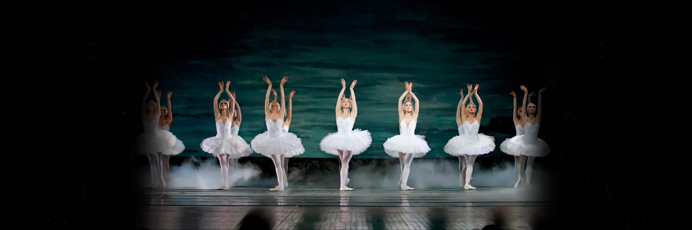
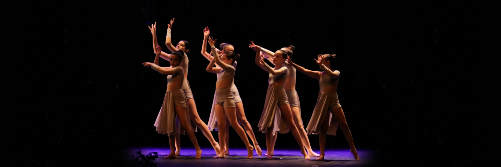

O ballet clássico é uma forma geral que engloba o estilo básico do ballet, dando origem a diferentes tipos, como o russo, o inglês, o francês e o italiano. Originado nas cortes imperiais, esse estilo de dança reflete a elegância e sofisticação da classe alta e da cultura da corte.
A interpretação muitas vezes é acompanhada por música clássica realizada por uma orquestra, contribuindo para elevar a arte da dança ao palco e à performance musical. Os movimentos são geralmente geométricos, focando a verticalidade do corpo e envolvendo posições precisas de pernas, braços, corpo e cabeça. O ballet clássico, por meio de suas regras e estilos, representa uma expressão refinada da dança em espetáculos artísticos.
O ballet neoclássico, introduzido por George Balanchine, busca romper com os padrões tradicionais e a estrutura codificada do balé clássico. Diferenciando-se por uma coreografia centrada na distância entre os passos, esta forma de dança moderniza o ballet clássico, afastando-se da narração de histórias através do movimento.
Apesar de manter a expressão de emoções por meio do corpo, o ballet neoclássico adota um estilo mais transparente e austero, refinando o vocabulário clássico. Enriquecendo a técnica clássica com elementos de dança livre, destaca-se pela substituição do tempo médio da música por ritmos mais marcados. Caracterizado pela complexidade coreográfica e um foco na habilidade dos bailarinos, as apresentações tendem a ser mais curtas em comparação com o ballet clássico, marcando uma distinção clara entre as duas modalidades.

No século XIX, surgiu a arte romântica e sua expressão no amor não correspondido e de sua mão nasceu o chamado ballet romântico. Romance, lugares imaginários e o sobrenatural são abraçados através deste tipo de bailado e o romantismo desesperado é explicado através da bailarina principal. Entre os coreógrafos mais destacados do ballet romântico estão Filippo Taglioni ou Bournonville, que nos deixaram incríveis obras de arte cênica, como La Sílfide.
O ballet moderno, também chamado de ballet contemporâneo, é um estilo influenciado tanto pelo ballet clássico quanto pela dança moderna. Em relação à primeira, adota-se a técnica, que permite maior amplitude de movimento. E no que diz respeito ao segundo, vêm a inovação e os conceitos atuais típicos do século XX.
O ballet moderno se caracteriza por querer criar formas novas e mais expressivas, com ações dramáticas que envolvem todo o corpo. Além disso, por meio do ballet moderno, cria-se uma fusão de estilos e arte, que permite que coreógrafos e bailarinos liberem seu poder criativo.

O ballet de ação, também conhecido como ballet-pantomima, começou a ser realizado no século XVIII e refere-se a um espetáculo narrativo por meio de coreografia. Sua particularidade é que a trama se desenvolve por meio de uma fusão de dança e pantomima, que se tornou um sucesso na época. O ballet de ação é projetado para representar os problemas do cotidiano em um tom de comédia.
A modalidade de ballet aquático, popularmente conhecida como nado sincronizado, é uma técnica inovadora que envolve trabalhar em harmonia e sincronia na água. É um estilo de ballet onde os nadadores conduzem a coreografia. Geralmente é praticado em grupos ou em duplas. Atualmente esta disciplina faz parte dos Jogos Olímpicos e de outras competições oficiais.
2023 © Todos os direitos reservados